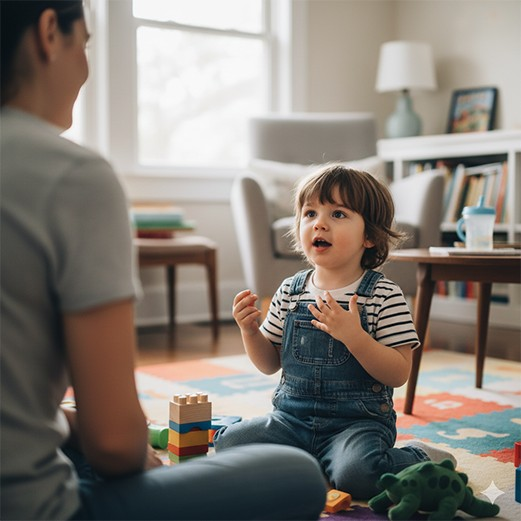

Jeigu pastebite, kad vaikas laisvai išdainuoja ištisus dainelių posmus arba atkuria filmukų dialogus, tačiau jam sudėtinga paprašyti sulčių ir apskritai sujungti kitus du žodžius, – jūs turite reikalų su vaiku, kuris kalbos mokosi „geštaltais" (dideliais kalbiniais vienetais, frazėmis).
Taip pradiniame kalbos mokymosi etape mokosi daugelis, tačiau ši teorija ypač svarbi suprantant autistiškų vaikų komunikaciją – tai kitoks kalbos plėtojimosi būdas.
Daineles ar frazes verta pasitelkti, tačiau kaip „išlaisvinti" pavienius žodžius iš dainelės ar frazės kalbinėje situacijoje? Kaip modeliuoti kalbą 3-ajame GLP etape?
4 strategijos kalbos modeliavimui
1
Mažiau yra daugiau
- Vietoj ilgų sakinių naudokite 1–2 raktinius žodžius.
- Trumpos, aiškios frazės padeda vaikui „pagauti" ir atkartoti atskirus žodžius.
„O dabar apsiaukime tavo gražius batus"
„Mano batai buvo du."
„Batai. Auti."
2
Komentuokite, o ne klauskite
- Venkite klausimų „Kas čia?" arba „Kokia spalva?".
- Tiesiog įvardinkite tai, ką vaikas mato ar daro.
„Kas čia? Kokia spalva?"
„Mašina. Mėlyna."
3
Naudokite „Laukimo pauzę"
- Pasakykite žodį ir palaukite 10 sekundžių.
- Duokite laiko vaikui pačiam bandyti sujungti žodžius.
- Bet koks atsakas – žvilgsnis, gestas, garsas – yra puikus žingsnis!
4
Akcentuokite veiksmo žodžius
- Naudokite trumpus, ryškius žodžius kasdienėse situacijose:
Dar
Stop
Dingo
Eina
Čia
Viršuj
„Gestaltinis kalbos mokymasis – tai ne problema, o kitoks kelias į kalbą. Mūsų užduotis – padėti vaikui tuo keliu eiti."